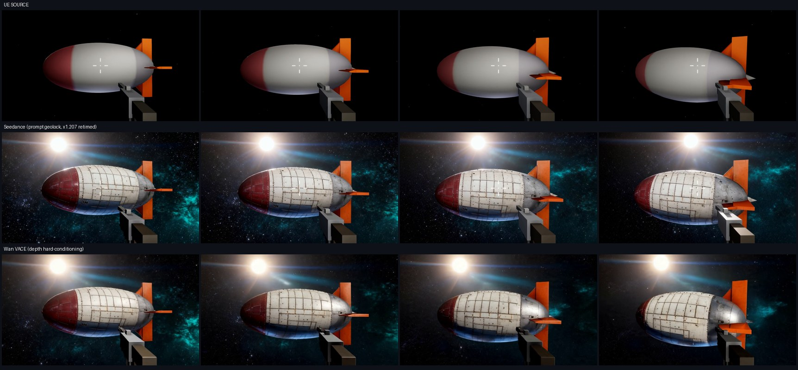

运行时改造的 UE6 游戏 × 生成式视频 · 实验记录
03/04 篇立了预言:prompt 是软约束,锁不死几何;要像素级对齐得上结构硬条件。 现在输入侧的两个变量都已拨正(05 篇的引擎改型 + 06 篇的大主体与像素对齐参考图),对照实验就绪: 同一段 v7 无枪击片段、同一张 Seedream 参考图,分别喂 Seedance 2.0 ref2video(几何冻结 prompt,纯软约束)和 Wan VACE 14B(task=depth,从源视频提取逐帧深度做硬条件)。

仪器沿用 06 篇终审套路:真值轮廓由 v7_clip.json 侧车解析投影(逐帧相机位姿+椭球+鳍+尾锥), 生成帧用解析先验引导的 GrabCut 分割,9 个采样时刻。Seedance 的 4.04s 输出用两种时间映射各测一遍—— 均匀拉伸映射(×1.207)逐帧完胜 1:1,坐实它对参考视频做了隐性慢放。
| 时刻 | Seedance(1:1) | Seedance(×1.207) | VACE(1:1) |
|---|---|---|---|
| 均值 | 0.918 | 0.933 | 0.915 |
| 最差帧 | 0.900 | 0.910 | 0.896 |
1. 输入对齐 > 约束机制。03 时代 Seedance 的输出是"两艘船";输入拨正后,同一个软约束端点做到 0.933——与深度硬条件(0.915)打平。 决定成败的不是 prompt 写多狠,而是参考图与真值是否像素对齐、主体是否占满画幅。
2. 软约束丢的是时间轴,不是空间。Seedance 空间锁住了,却把 3.35s 隐性慢放成 4.04s(×1.207)——对纯观赏无所谓, 对训练数据是隐患(开枪时刻等事件对不上侧车 JSON)。VACE 的 match_input 帧数/帧率逐位复刻,时间轴零漂移。
3. 分工定型。要电影感(1080p、光晕、氛围)用 Seedance + 事后 setpts 时间校正;要严格时空配对的训练数据用 VACE depth。 两条路的输入侧配方相同:引擎保证几何 → 大主体渲染 → 像素对齐参考图。
至此 01→07 的主线闭环:游戏渲染(参数全记录)→ 编辑模型选型(定量+仪器校准)→ 生成视频(软硬双路)→ 解析真值验收。 几何对齐从"祈祷 prompt"变成了"引擎侧工程 + 输入侧对齐 + 逐帧可验证"。